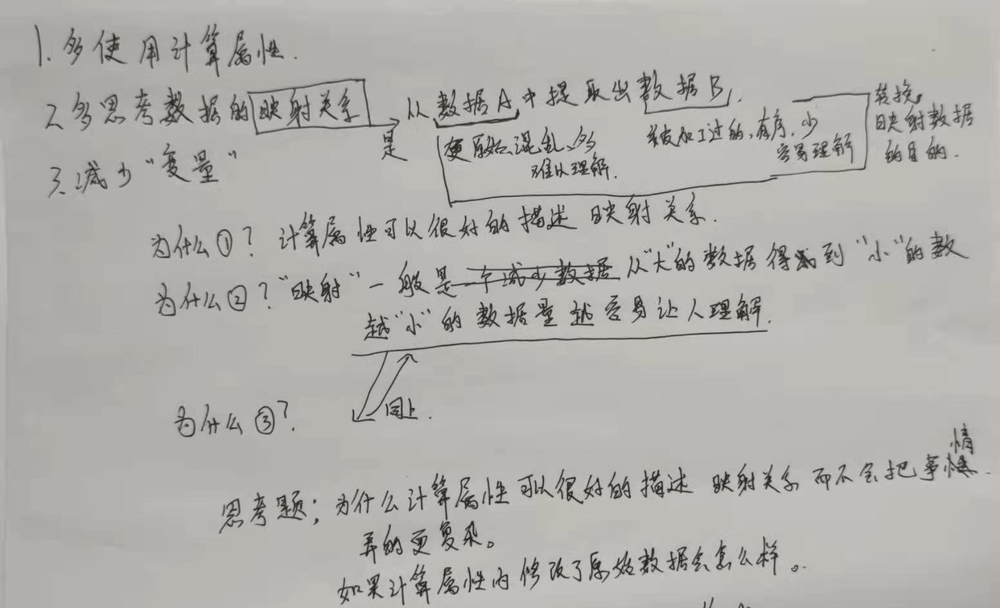

崮生的编程技巧
2020-11-13 教同事如何写更好的代码的一些总结

核心思想就是减少数据量，数据量越小人越容易理解。而在 vue 中计算属性可以很好的缩小数据。
更明确的说法其实就是要思考好 输入 与 输出，我的输入到底是什么，我的输出又是什么呢，代码中的这一段是用来处理输入的还是处理输出的？
输入越少的系统一般来说鲁棒性是越强的，写这样的系统的代码也不容易出错。
如果不在开始写代码之前思考清楚输入与输出，那写出来的代码很有可能就是混乱不堪的，代码之间的关系会相互纠缠难以理清。
明确输入与输出之后，在写代码的时候也需要做好隔离，不能说我处理输入 A 的代码分散到了天涯海角（这个问题我之前是挺严重的）
程序的结构只有这一种 :
写程序最重要的就是理清 input 与 out 然后再 思考 tranform 应该是什么样子的、该怎么写
上面一段
是整体的指导思想，对于前端常用的
MVVM
软件架构可以使用这种思想来指导 model 与 view 的定义，model 中哪一部分是输入？哪一部分是输出？输入在 view 中是怎么呈现的？输出又是在 view 中如何呈现呢？
从现实的前端工作中来说，有时我们需要通过设计图来决定程序的实现，在这种情况下我们已经明确了 view ，如何反推出优良的 model 定义呢？这就是如何根据需求建模。